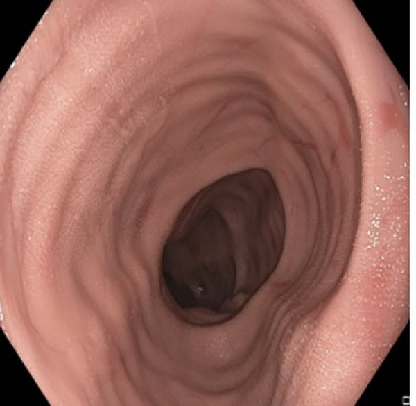
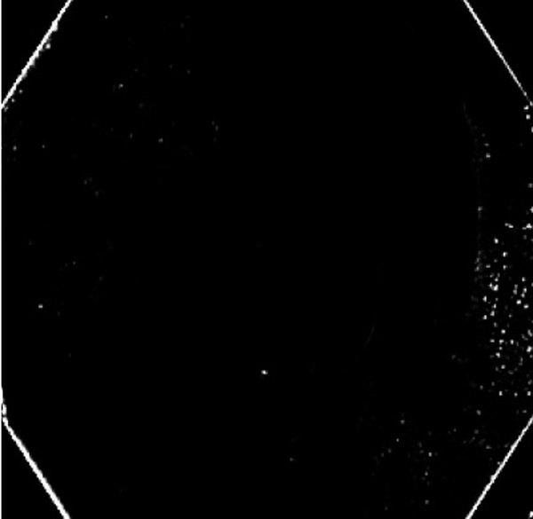
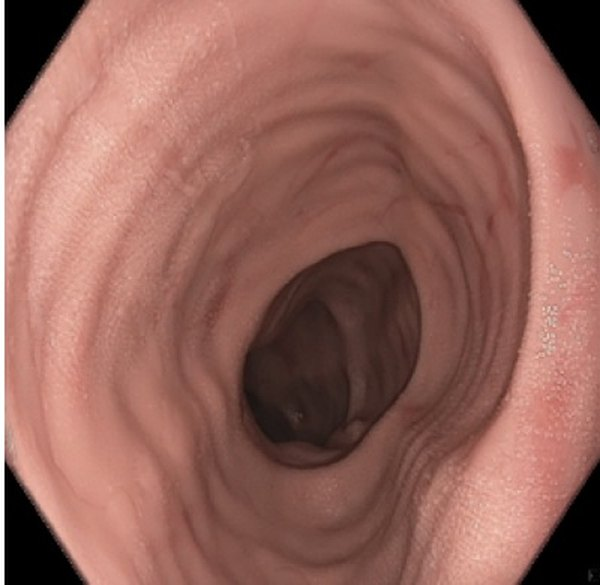
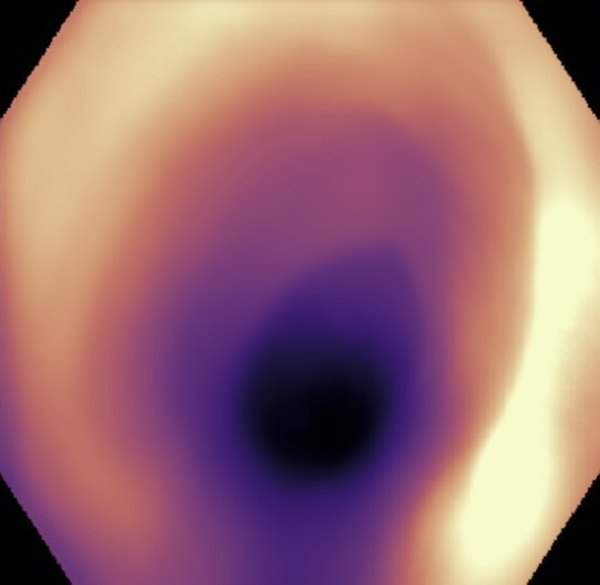
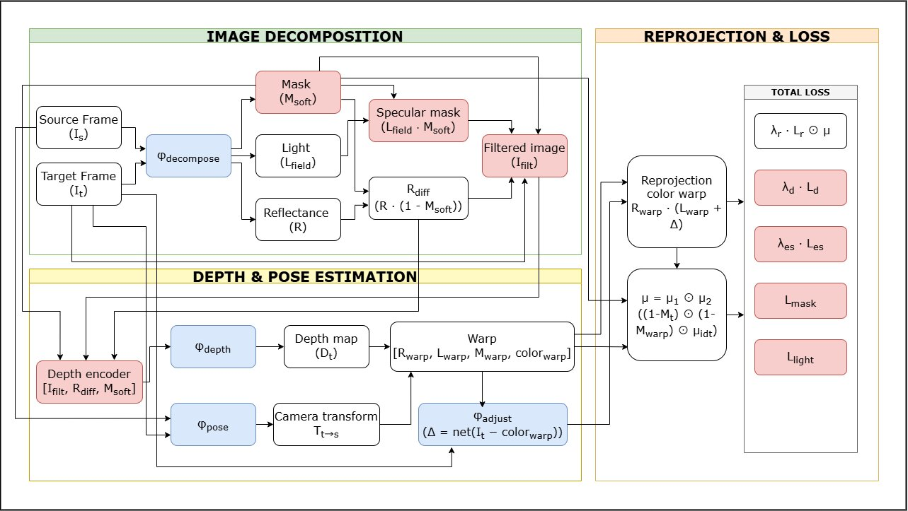
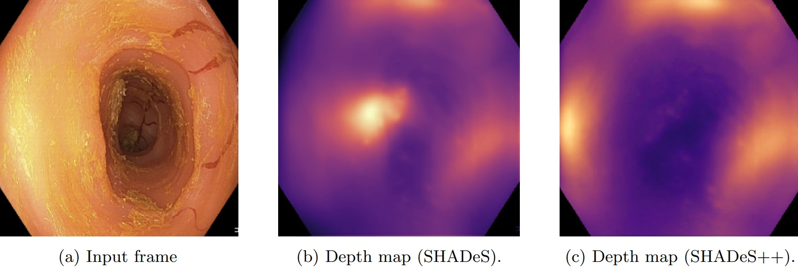

SHADeS++: Specular-Aware Monocular Depth Estimation in Endoscopy
Decomposition-guided inpainting and self-supervised soft specular mask learning for robust depth estimation under specular distortions and environmental artifacts.
Accurate 3D geometric understanding is critical for surgical applications, yet ground-truth geometry is impractical to obtain in the operating room, so endoscopy relies on monocular depth estimation. That estimation is far less accurate than in natural scenes because specular reflections and environmental artifacts violate the photometric assumptions self-supervised methods depend on. SHADeS++ upgrades the SHADeS framework by replacing its detached specular detector and hyperparameter threshold with an internal, learnable soft specular mask, making the whole pipeline end-to-end trainable. The mask is predicted directly by the decomposition network and jointly optimized with the depth and decomposition objectives. It drives a decomposition-guided inpainting strategy that reconstructs specular regions from neighborhood reflectance, and it is folded into the photometric consistency loss to suppress corrupted regions during training. Extensive experiments show that SHADeS++ significantly improves depth accuracy under specular distortion, and stays robust on more recent, realistic endoscopic datasets where prior methods degrade sharply.
The problem
Self-supervised monocular depth methods reconstruct a target frame from neighboring source frames as their training signal, assuming brightness constancy and Lambertian reflectance: the same 3D point looks the same from any viewpoint. In endoscopy that assumption is violated constantly by:
- Specular highlights from wet tissue surfaces.
- Fluids and mucus causing visual distortions.
- Residual debris obscuring anatomical structures.
- Non-Lambertian, view-dependent reflectance.
These artifacts are structured and spatially localized, so they inject systematically wrong gradients into the photometric loss and push the depth network toward distorted geometry. The original SHADeS partly addresses this with intrinsic decomposition, but it still relies on an external, hard specular mask that is fixed before training and cannot be refined jointly with depth. SHADeS++ is designed around five requirements: explicitly identify unreliable regions, selectively attenuate them in the loss, represent specularity continuously rather than as a hard threshold, preserve structure in corrupted regions instead of discarding it, and stay fully self-supervised.




Method
1. Non-Lambertian decomposition and a learned soft mask
SHADeS used a non-Lambertian image model \(I = A\cdot S + M\) where the specular term \(M\) is produced externally by a pretrained inpainting module before training. SHADeS++ keeps the non-Lambertian view but makes the specular component an internal output of the decomposition network \(\phi_\text{decompose}\), learned jointly with everything else:
Here \(R_\text{diff}\) is the diffuse reflectance, \(L_\text{field}\) the illumination field, and \(M_\text{soft}\in[0,1]\) a per-pixel specular probability from a sigmoid. Because no pixel-level specular labels exist, \(M_\text{soft}\) is supervised by a brightness-derived prior. The image brightness is high-pass filtered, then thresholded at its 97th percentile to mark sharp specular peaks:
The soft mask is then aligned to this prior with a binary cross-entropy term, plus a total variation penalty and a mask-ratio regularizer (target \(\rho = 0.15\)) that stabilizes early training and prevents the mask from collapsing to all-zero or all-one:
2. Decomposition-guided inpainting and the 7-channel input
Specular pixels are not zeroed out (which would create artificial dark holes) but reconstructed from neighboring non-specular reflectance. Refining the raw reflectance and filling masked pixels with a luminance-normalized neighborhood estimate \(\tilde{R}_\text{neigh}\) yields a specular-free filtered image:
Rather than feeding only \(I_\text{filt}\) to the depth encoder, SHADeS++ concatenates it with the reflectance and the mask into a seven-channel input, so the encoder sees a clean image, a view-independent surface estimate, and an explicit map of which pixels were inpainted:
3. Specular-aware reprojection
The composite reprojection mask is extended so a pixel only supervises depth if it is non-specular in both the target and the warped source view, removing highlight contamination from the photometric signal entirely:
The photometric reprojection loss itself follows the standard SSIM and \(\ell_1\) combination with \(\alpha = 0.85\):

4. Training objective
All terms are optimized jointly. A spatially adaptive smoothness weight \(w_s = 1 + \beta\,M_\text{soft}\) (\(\beta = 0.3\)) applies stronger regularization in specular regions, and the decomposition reconstruction loss drops SSIM (keeping only \(\ell_1\)) so structure is not arbitrarily split between reflectance and illumination. The full objective is:
ResNet-18 backbones, U-Net decoder, trained from scratch for 20 epochs (Adam, lr \(5\times10^{-5}\), batch 8, inputs 288×288, frames \(\{-1,0,+1\}\), four scales) on 4× NVIDIA Quadro RTX 6000.
Results
SHADeS++ is evaluated with standard depth metrics (lower is better for errors, higher for the \(\delta<1.25^k\) accuracies \(a_1,a_2,a_3\)) under median scaling. On the standard C3VD benchmark it is best on every reported metric, including over the strongest SHADeS variant.
The decisive result is on C3VDv2, a far more realistic benchmark with fecal debris, mucus, blood, and fast motion. SHADeS degrades sharply there, while SHADeS++ stays stable, and it generalizes cleanly in both cross-dataset directions.
| Method | AbsRel↓ | SqRel↓ | RMSE↓ | RMSElog↓ | a1↑ | a2↑ | a3↑ |
|---|---|---|---|---|---|---|---|
| Monodepth2 | 1.48 | 0.23 | 0.50 | 1.81 | 0.62 | 0.92 | 0.98 |
| MonoViT | 1.49 | 0.29 | 0.59 | 1.78 | 0.63 | 0.92 | 0.99 |
| IID-SfMLearner | 1.58 | 0.29 | 0.54 | 1.99 | 0.61 | 0.90 | 0.98 |
| SHADeS (best variant) | 1.40 | 0.22 | 0.50 | 1.72 | 0.65 | 0.93 | 0.99 |
| SHADeS++ | 1.35 | 0.21 | 0.49 | 1.71 | 0.68 | 0.95 | 0.99 |
TABLE 1 · Depth estimation on C3VD. Baselines from Daher et al., rescaled to this protocol. Selected rows; full table in the report.
| Train → Test | Method | AbsRel↓ | SqRel↓ | RMSE↓ | a1↑ | a2↑ | a3↑ |
|---|---|---|---|---|---|---|---|
| C3VDv2 → C3VDv2 | SHADeS | 1.534 | 0.250 | 0.511 | 0.631 | 0.862 | 0.969 |
| C3VDv2 → C3VDv2 | SHADeS++ | 1.357 | 0.218 | 0.500 | 0.669 | 0.927 | 0.982 |
| C3VD → C3VDv2 | SHADeS++ | 1.380 | 0.214 | 0.497 | 0.662 | 0.928 | 0.988 |
| C3VDv2 → C3VD | SHADeS++ | 1.368 | 0.211 | 0.494 | 0.671 | 0.932 | 0.988 |
TABLE 2 · C3VDv2 (debris-filled v3 test) and cross-dataset generalization.
An ablation isolates each component. Restoring the decomposition-guided input \(I_\text{filt}\) gives the single largest jump, the learned mask beats a fixed brightness threshold, and specular loss masking adds a further independent gain.
| Variant | AbsRel↓ | SqRel↓ | RMSE↓ | a1↑ | a2↑ | a3↑ |
|---|---|---|---|---|---|---|
| SHADeS (baseline) | 1.534 | 0.250 | 0.511 | 0.631 | 0.862 | 0.969 |
| w/ hard mask | 1.420 | 0.235 | 0.507 | 0.648 | 0.895 | 0.976 |
| w/o I_filt | 1.490 | 0.244 | 0.509 | 0.638 | 0.875 | 0.972 |
| w/o loss masking | 1.390 | 0.225 | 0.503 | 0.658 | 0.912 | 0.979 |
| SHADeS++ (full) | 1.357 | 0.218 | 0.500 | 0.669 | 0.927 | 0.982 |
TABLE 3 · Ablation on C3VDv2. Performance improves monotonically toward the full model.

Key contributions
- A specular-aware depth framework that jointly models reflectance, illumination, and a learned soft specular mask for better geometric reasoning.
- A decomposition-guided inpainting strategy that builds a clean filtered image for depth prediction by reconstructing specular regions.
- A self-supervised mask learning approach driven by brightness priors, removing the need for any specular annotation.
- Specular awareness integrated directly into the photometric self-supervision, restricting depth supervision to reliable regions.
- State-of-the-art robustness and cross-dataset generalization across challenging endoscopic benchmarks.